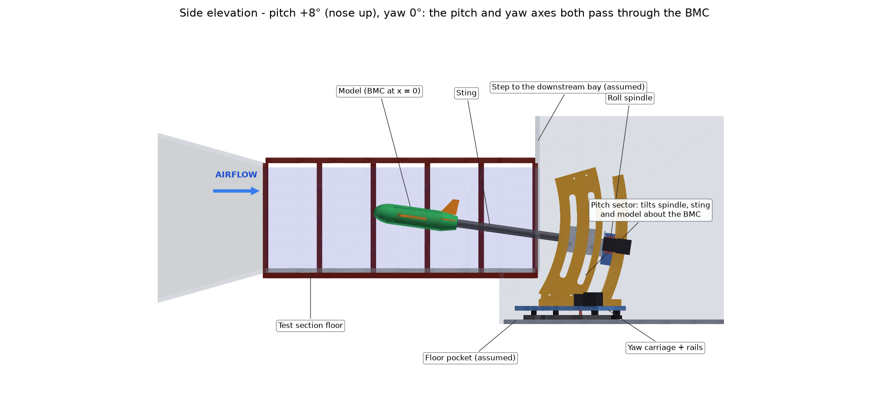
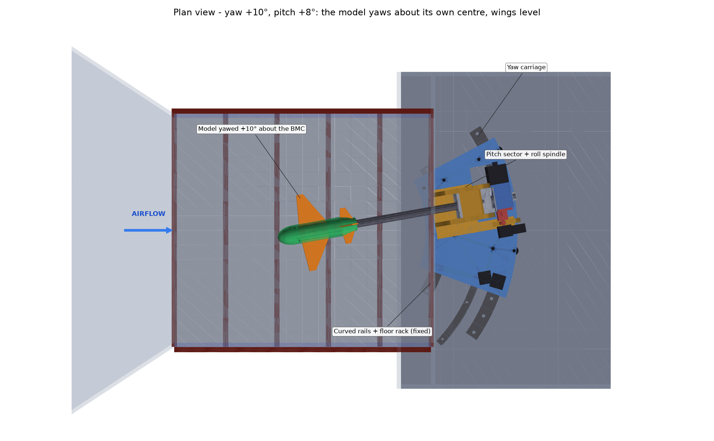
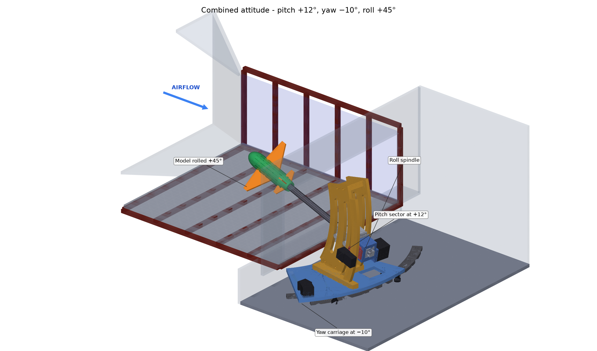
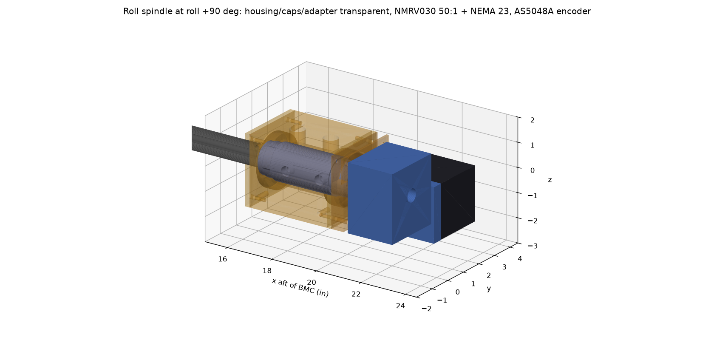
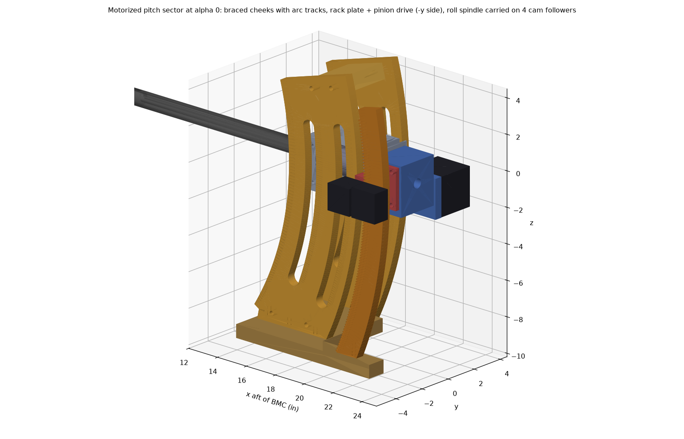
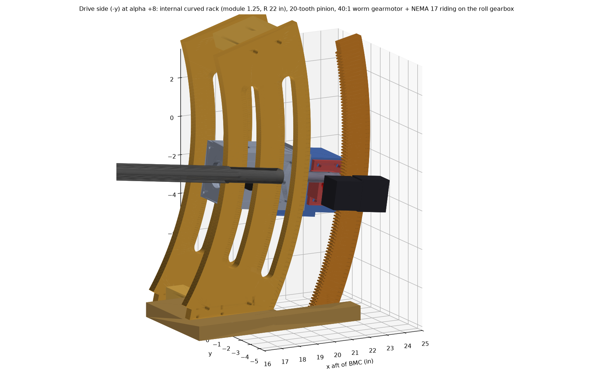
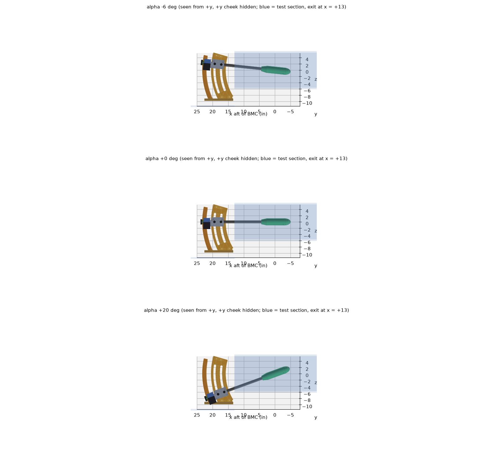
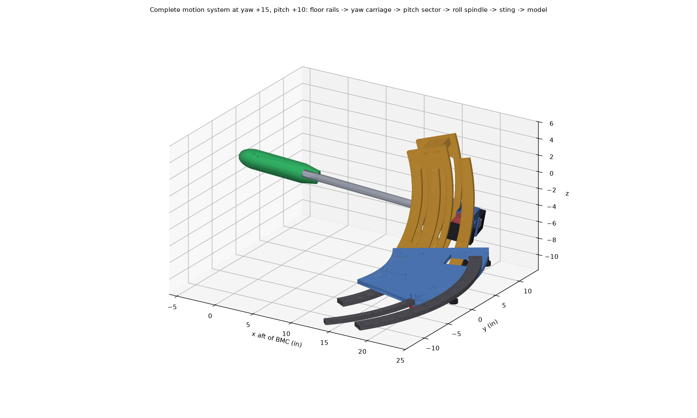
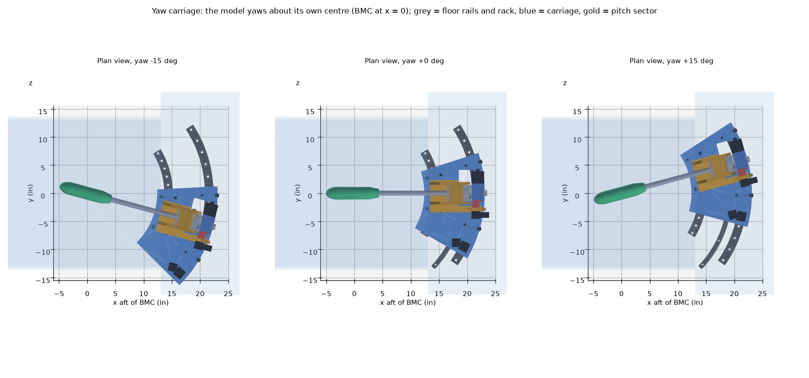
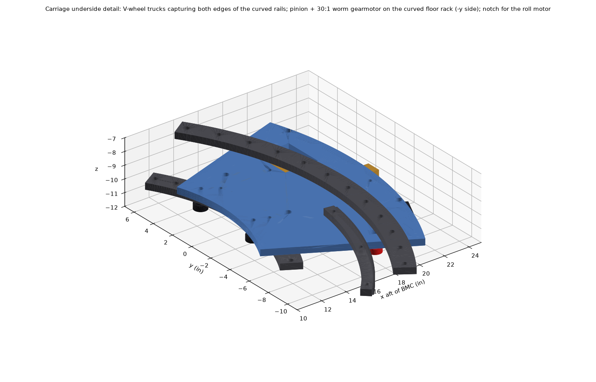

Motion system: yaw carriage, pitch sector, roll spindle
Three stacked axes, all rotating about the balance moment centre, driven by steppers through self-locking worm gearboxes so the motors can be switched off while data are taken.
Kinematic chain
Body attitude R = Rz(ψ) Ry(θ) Rx(-φ). The flow angles follow from the aircraft velocity in body axes: α = atan(w/u), β = asin(v/V). Checks: pitch 10° gives α = 10°; yaw 10° gives β = 10°; pitch 10° at roll 90° gives pure 10° sideslip. An inverse solver returns the machine angles for a requested (α, β, φ) - e.g. α 10°, β 5° -> yaw 5.000°, pitch 10.000° (motion_envelope.py).
Envelope and model-size limit
Maximum roll vs model span
Over the full yaw ±15° and pitch -6°..+20° range, 0.5 in wall margin, 2.25 in pod.
| Model span | Max roll |
|---|---|
| ≤ 9 in | ±90° |
| 10 in | ±65° |
| 12 in | ±50° |
| 15 in | ±35° |
| 18 in | ±25° |
The sting clears the test-section exit lip by at least 0.25 in up to 20° of pitch at any yaw. The control
software calls an allowed(ψ, θ, φ, model) interlock before every move.
The whole system in the tunnel
All hardware assembled in the test section (26.25 W x 11.25 H x 30 L in, balance moment centre 17.0 in aft of the entrance) and the downstream bay. The tunnel walls are simple boxes styled after the photos; the bay floor height and width are assumed. Checked: no part touches the tunnel walls at any of the three attitudes shown. The closest clearance is 2.0 in (wing tip to ceiling at pitch +12°, yaw −10°, roll +45°).





CAD: assembly_system_in_tunnel.step (tunnel plus all hardware at pitch +8°, yaw +10°).
Roll spindle (±90°) - designed



| x from BMC (in) | Item |
|---|---|
| 16.41-16.61 | Front cap; pilot lip clamps the front bearing outer ring |
| 16.65 / 19.65 | Two 6907-2RS bearings (35 x 55 x 10 mm), 3.00 in apart, in a line-bored 6061 housing |
| 17.0-20.0 | Sting flats in the spindle's D-D bore (the roll drive); 2 cross bolts reached through top windows |
| 20.04-20.42 | M35x1.5 thread, KM7 locknut (bearing preload) inside the rear cap |
| 20.53 | Wire exit: the sting wire bore turns radially out into the adapter window (sweeps ±90°) |
| 20.88-22.88 | NMRV030 50:1 self-locking worm gearbox on the 14 mm keyed shaft; NEMA 23 points sideways |
| 23.38 | Spindle end: 6 mm magnet read by an AS5048A absolute encoder (0.022°) |
Bearing loads at 25 lbf lift: 165 / 140 lbf (rating ~2,700 lbf). Spindle bending 1,960 psi. Motor torque needed 0.23 N·m. All drive parts sit ≥ 20.9 in from the BMC, outside the pitch-sector cheek band.
Parts, drawings and CAD files
| Drawing (PDF) | Part | STEP |
|---|---|---|
| WT-6C-200 | Assembly, roll spindle (parts list) | assembly_roll_spindle_phi+0.step |
| WT-6C-201 | Spindle, roll | spindle_4140.step |
| WT-6C-202 | Housing, roll spindle | housing_6061.step |
| WT-6C-203-1 | Cap, bearing, front | front_cap_6061.step |
| WT-6C-203-2 | Cap, bearing, rear | rear_cap_6061.step |
| WT-6C-204 | Adapter, gearbox | gearbox_adapter_6061.step |
| WT-6C-205 | Bracket, roll encoder | encoder_bracket.step |
Pitch arc sector (-6° to +20°) - motorized design done





| Part | Design |
|---|---|
| Followers (moving) | 4x 3/4 in cam followers on the roll housing studs at x = 17.3 / 19.4 in |
| Cheeks (fixed) | 2x 1/2 in 6061, band r 15.8-20.5 in, arc tracks r 17.3 / 19.4 in centred on the BMC; +y cheek kept inside r 20.5 in to clear the roll motor |
| Bracing | 0.75 in base plate (yaw-carriage interface), 2 bottom spacers, top tie above the swept region |
| Rack plate (fixed) | internal curved rack, module 1.25, pitch radius 22 in, teeth -26°..+11° |
| Drive (moving) | bearing block on the roll gearbox, 20-tooth pinion, 40:1 worm gearmotor + NEMA 17 |
| Base notch | aft of x = 18.4 in only a -y strip remains, so the roll gearbox and motor can swing down at +20° |
Checked with no interference at -6, -3, 0, 5, 10, 15 and 20° (moving roll assembly, sting, balance, pod, followers and drive vs the fixed frame and the test section). Constant gaps: housing to cheek 0.05 in, pinion block to rack plate 0.05 in, roll motor to cheek 0.26 in. Rack force ~12 lbf, motor needs 48 mN·m; gravity always loads the mesh the same way, so backlash never reverses. Drawings WT-6C-401 to 406 are done; limit/home switches (at -7° / +21°) are on the Electronics page. Still open: FEA of lateral stiffness at 90° roll. The earlier manual sector (pin index every 2°) is superseded.

Parts, drawings and CAD files
| Drawing (PDF) | Part | STEP |
|---|---|---|
| WT-6C-400 | Assembly, pitch sector (parts list) | assembly_pitch_sector_alpha+0.step |
| WT-6C-401 | Cheek, pitch sector (qty 2) | cheek_plus_y.step |
| WT-6C-402 | Rack plate, pitch | rack_plate.step |
| WT-6C-403 | Plate, base, pitch | base_plate.step |
| WT-6C-404-1 | Tie, top | top_tie.step |
| WT-6C-404-2 | Spacer, fwd | spacer0.step |
| WT-6C-404-3 | Spacer, aft | spacer1.step |
| WT-6C-405 | Bracket, pitch drive | drive_bracket_6061.step |
| WT-6C-406 | Pinion shaft (gear is bought) | pinion_shaft_8mm.step |
Yaw carriage (±15°, option B) - designed





| Part | Design |
|---|---|
| Rails (fixed) | 2 curved V-edge rails, 1/2 in plate, centre radii 14.4 and 21.6 in about the vertical axis through the BMC |
| Trucks | 4 trucks (inner ±12°, outer +14° and -16°), each 2 V-groove wheels gripping both rail edges: down-load, uplift and radial |
| Carriage plate | 1/2 in 6061 annular plate under the pitch-sector base; notch for the roll gearbox and motor at +20° pitch |
| Drive | curved floor rack (module 1.25, R 19.6 in, external teeth), 20-tooth pinion, 30:1 worm gearmotor + NEMA 17 |
| Height | rails and carriage fit in the 1.5 in between the (assumed) duct floor and the sector base |
Checked with no interference at every combination of yaw -15/0/+15° and pitch -6/0/+20° against the rails, rack, floor, test section and bay walls. Truck loads: up to 43 lbf down and 32 lbf uplift (with 25 lbf lift). Yaw drive ~26 in-lbf about the axis, 1.3 lbf at the rack. To confirm: the duct floor height and width at the rails (assumed 11.35 in below the centreline, 36 in wide); the carriage plate and inner rail reach under the test-section exit (to x ≈ 10.7 in at ±15° yaw).
Parts, drawings and CAD files
| Drawing (PDF) | Part | STEP |
|---|---|---|
| WT-6C-500 | Assembly, yaw carriage (parts list; preliminary) | assembly_yaw_carriage_psi+15.step |
| WT-6C-501 | Rail, yaw, inner (preliminary) | rail_inner.step |
| WT-6C-502 | Rail, yaw, outer (preliminary) | rail_outer.step |
| WT-6C-503 | Rack, yaw, floor (preliminary) | floor_rack.step |
| WT-6C-504 | Plate, yaw carriage (preliminary) | carriage_plate_6061.step |
| WT-6C-505 | Pinion, yaw (modified stock gear) | yaw_pinion_m1.25_20T.step |
| WT-6C-506-1 | Spacer, wheel, plain (qty 4) | wheel_spacer_plain.step |
| WT-6C-506-2 | Spacer, wheel, eccentric (qty 4) | wheel_spacer_eccentric.step |
Drive sizing summary
| Axis | Load | Motor + gearbox | Notes |
|---|---|---|---|
| Roll | 35 in-lbf (aero 30 + wire loop + bearings) | NEMA 23 + NMRV030 50:1 | 222 steps/deg, 18°/s; approach targets from one side (moment changes sign); spindle encoder |
| Pitch | ~8 in-lbf at the pinion | NEMA 17 + 40:1 worm + 20T pinion on the R22 rack (x44.7) | 7,947 steps/deg (0.000126° per microstep); max 2°/s (~600 motor rpm); gravity preloads the mesh |
| Yaw | ~1.5 in-lbf at the pinion | NEMA 17 + 30:1 worm + 20T pinion on the R19.6 rack (x39.8) | 5,310 steps/deg; 3°/s; captive V-wheels; rolling resistance dominates |
Scripts: motion_system_sizing.py, motion_envelope.py.